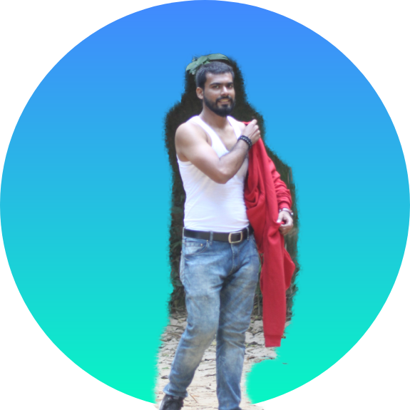

"Eid Mubarak"
to my 3 notorious bondhu !!!
Eid song
Md. Mahadi Hasan
ভাল মানুষ। হাসি তার মুখে লেগেই থাকে। দাড়ি বড় করে নিজেকে ভাবে "কবির সিং" কিন্তু আসলে সে "গরিব সিং"
এবং।। he is a branded boy, but not dabaang boy।। তার জীবনের অনেক গুলো অপূর্ণ ইচ্ছার মধ্যে একটি হচ্ছে "Jameson (Irish Whisky)"পান করা। ইতিমধ্যে সে "Ricard" পান করেছে। সবকিছুর পরে যদি পায় একটু ভুষি, সে হয় হেব্বি খুশি...।।এবার নিচের বাটন চাপুন।।
Jameson Song
This is Md. Manwar
অত্যন্ত ভদ্র ও সুশীল প্রকৃতির মানুষ। কিন্তু আমরা..ওর ভদ্রতা ও সুশিলতার মাঝে, সর্বদা অস্লিলতা খোজার জন্য আকুল/বেকুল হয়ে থাকি (তবে এর পিছনে শুধু মেহেদি জরিত)। ইউনিভারসিটি লাইফ এর প্রথম দিকের বন্ধু,খুব ভাল পরামর্শ দিতে পারে, ভাল বক্তা। আমার উপর অনেক সময় বিরক্ত হয়েছে, আমি নিজের ভাল না বোঝার জন্য। কিন্তু এই বেক্তি কখনো নিকোটিন খেতে চায় না,বেপারটি নিয়ে তার বরিসাইল্লা ভাই-বন্ধু "Sam" এর সাথে কয়েক দফা মারামারি ও হয়েছে...। এবার নিচের বাটন চাপুন, আর আপনার পছেন্দের গান শুনুন।
এই তো গান
Olid Hasan Sourab
এলিট পরিবারের সন্তান। তার পারসনালিটি খুব হাই ! বন্ধুদের জন্য সে নিবেদিত প্রান। স্টাইল এর বেপারে সে কারো সাথে আপোষ করে না। তার সব ঠিকঠাক, শুধু 2% তারকাটা। এই মহান বেক্তির পছেন্দের গানটি শুনতে, নিচের বাটন চাপুন।
sam's song

vai re vai k tmi??
অহহহ!! এইটা তো আমি। নিজের বেপারে কি আর বলবো, নাম তো সুনাই হগা (সাবধান !! পূর্বের লাইনটি পরে, বিভ্রান্ত হবেন না...হিন্দি তে বলেছি।) @প্রচণ্ড শীতে গরম অনুভব করায়, হুডি খুলতে বাধ্য হয়েছি। "গরম লাগে আমার দুপুরে,
শিহরিত তোমার নূপুরে,
ঝাপ দিবো আমি প্রেমের পুকুরে...।
কিন্তু ডুবব নাআআ " গানটি শোনার জন্য, নিচের বাটন চাপুন..........
playy!!!

.png)
.png)
.png)